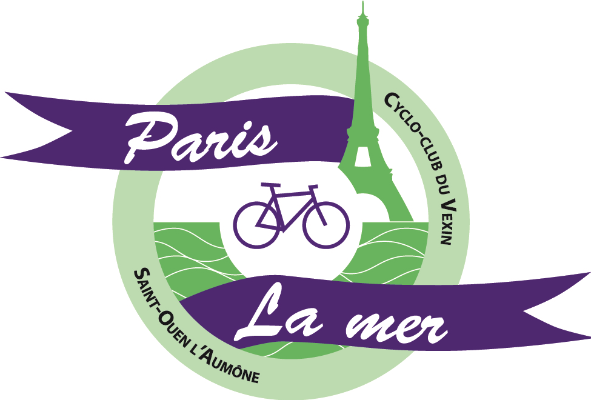
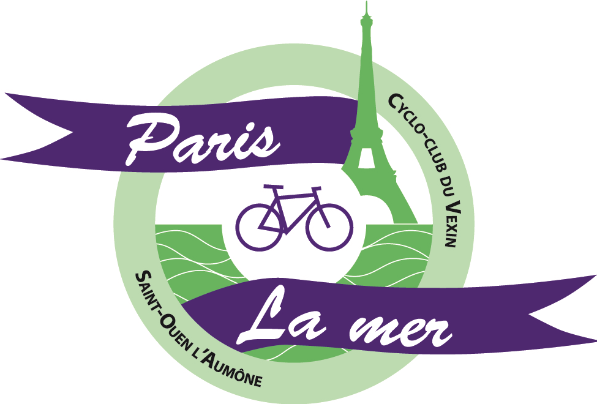

Organisation créée en 1935 et reprise par le Cyclo-Club du Vexin en 1976
Sur une distance de 250 à 400 kilomètres sur 2 jours,
aller-retour de St-Ouen l'Aumône à Criel sur mer (76).
Randonnée Paris-La Mer 2021
Le Cyclo-Club du Vexin du Val d’Oise (95) vous propose une belle randonnée à vélo pour aller voir la mer les 19 et 20/06/2021(dates sous réserve de validation du CoDep 95 de cyclotourisme).
La randonnée
En partant de Saint-Ouen l’Aumône ou de Gisors, le samedi matin, vous traverserez à vélo le parc régional du Vexin, les départements de l’Oise, de l’Eure et de la Seine Maritime, pour arriver à Criel-sur-mer, sur le littoral de la côte d'Albâtre. Retour le lendemain.
 

Les parcours (kilométrage aller/retour)
Trois parcours sont proposés pour rendre la randonnée accessible à tous :
Light départ de Gisors 250 km
PLM Classic départ de Saint-Ouen l’Aumône 330 km
PLM Maxi départ de Saint-Ouen l’Aumône 400 km
Les randonneurs découvriront des itinéraires toujours très appréciés (traversée de jolis villages comme Songeons ou Gerberoy) et les amateurs de BPF pourront pointer, selon le parcours choisi, à Vétheuil (95), Lyons La Forêt (27), Les Andelys (27), Saint Germer de Fly (60), Songeons-Gerberoy (60) ou Chaumont en Vexin (60).
L’hébergement est prévu au château de Criel-sur-Mer http://www.chateaudechantereine.fr/ (les draps et couvertures sont fournis mais pas les serviettes de bain).
Ce bâtiment historique, au riche passé, situé à 800m de la plage et 500m du bourg, est le lieu idéal pour un repos bien mérité, après une longue randonnée sur des petites routes de campagne.
La précédente édition s'est déroulée le samedi 6 et le dimanche 7 juillet 2019.
Extrait du compte rendu de cette édition : Les participants ont apprécié les parcours et l’organisation qui leur ont été réservés.
Cette randonnée s'effectue en deux jours, avec une étape à Criel sur Mer (au sud du Tréport). Un hébergement facultatif en gîte vous est proposé au château de Chantereine (voir bulletin d'inscription).
AGE MINIMUM
15 ans. L'encadrement des mineurs n'est pas assuré.
TRANSPORT DES BAGAGES
Les bagages doivent être étiquetés au nom et numéro du participant. Dépôt au départ le samedi ; retrait à Criel sur Mer de 14h à 19h au Château de Chantereine ; remise à Criel le dimanche de 7h à 8h ; retrait à St-Ouen l'Aumône le dimanche de 14h à 19h.
Attention
- Chaque participant est tenu de respecter le code de la route en toutes circonstances.
- Le parcours n'est pas fléché : un descriptif détaillé du parcours sera donné à chaque participant, ainsi qu’une trace GPX pour les personnes inscrites qui en feront la demande. Cartes routières à emporter : Michelin série Local n°304 ou IGN série verte n°8 et 3 ou IGN série rouge n°R04 et R12.